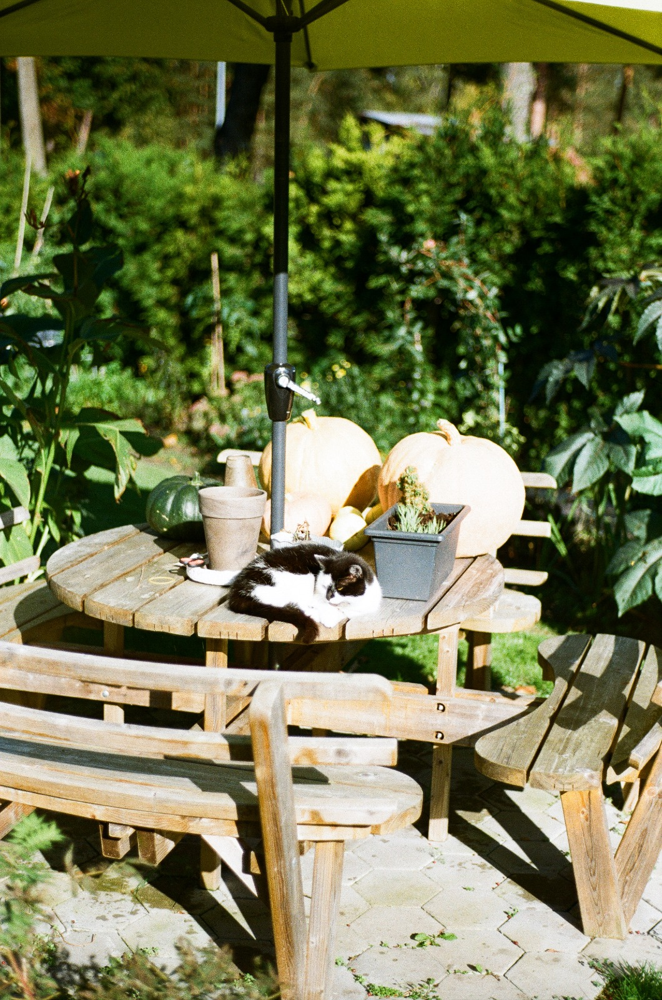
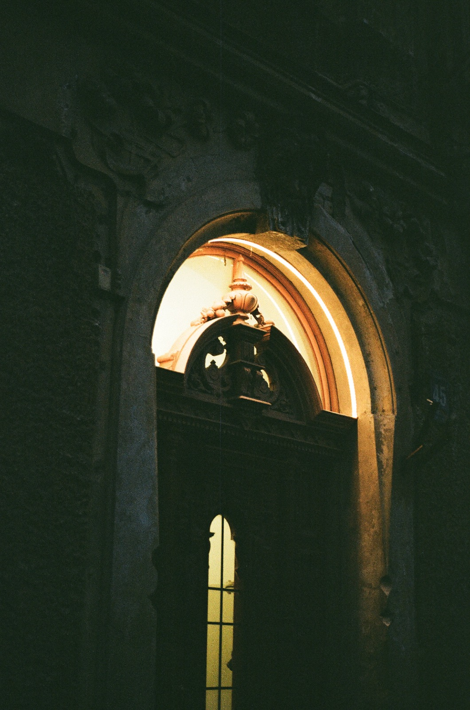

Par analogo fotogrāfiju
Analogā fotogrāfija ir svarīga kultūras mantojuma daļa, kas palīdz saglabāt vēsturiskus notikumus, cilvēkus un vietas nākamajām paaudzēm. Atšķirībā no digitālajiem attēliem, analogās fotogrāfijas tiek veidotas uz filmas.
Latvijas Kinofotofonodokumentu arhīvs glabā tūkstošiem fotogrāfiju, filmu un skaņas ierakstu, kas atspoguļo Latvijas vēsturi. Šie materiāli ir nozīmīgs informācijas avots pētniekiem un sabiedrībai.
Analogo fotogrāfiju saglabāšana palīdz aizsargāt unikālas liecības par pagātni. Digitalizācija un arhivēšana nodrošina, ka šie materiāli nepazūd un paliek pieejami arī nākotnē.
Mana analogās fotogrāfijas galerija
Šīs fotogrāfijas uzņēmu ar analogo filmu kameru Rolleiflex SL35. Katra bilde ir daļa no mana ceļojuma analogās fotogrāfijas pasaulē un apliecina, kā filma spēj saglabāt unikālu noskaņu un detaļas.


Kāpēc analogā fotogrāfija ir nozīmīga?
- Saglabā vēsturiskās liecības.
- Atspoguļo kultūras mantojumu.
- Sniedz informāciju pētniekiem.
- Palīdz izprast sabiedrības attīstību.
Kā nodot fotogrāfijas arhīvam?
Latvijas Valsts kinofotofonodokumentu arhīvs pieņem fotogrāfijas, kas dokumentē Latvijas vēsturi, kultūru, sabiedrisko dzīvi un citus nozīmīgus notikumus. Arhīvā iespējams nodot gan analogās, gan digitālās fotogrāfijas.
Pirms nodošanas fotogrāfijas ir jāapraksta. Svarīgi norādīt informāciju par attēlā redzamajiem objektiem, vietu, datumu un notikumu, lai nākotnē dokumentus būtu iespējams viegli atrast un izmantot pētniecībā.
Pamatprasības fotogrāfiju nodošanai
- Jānorāda fotogrāfijas autors.
- Jānorāda uzņemšanas vieta un laiks, ja tas ir zināms.
- Fotogrāfijas jānodod oriģinālajā formātā un pēc iespējas augstākajā kvalitātē.
- Digitālajām datnēm nedrīkst samazināt kvalitāti vai mainīt oriģinālo formātu.